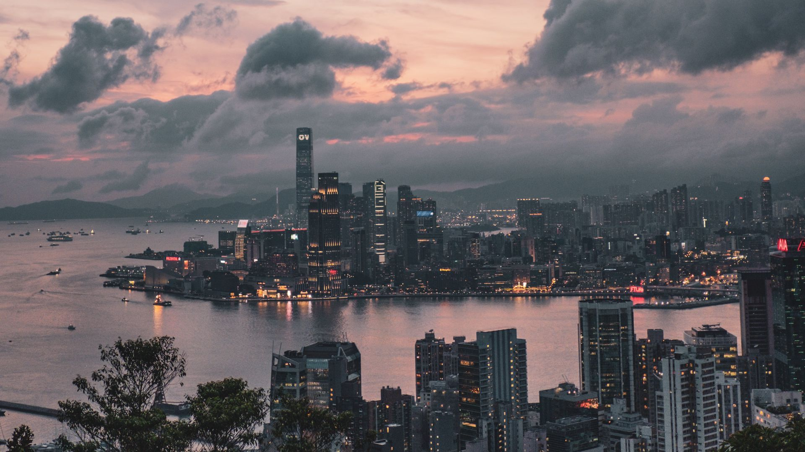
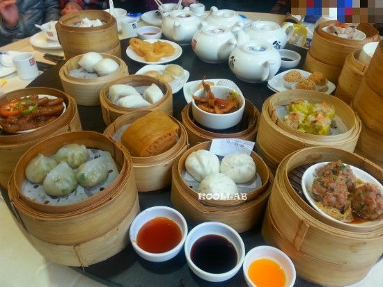
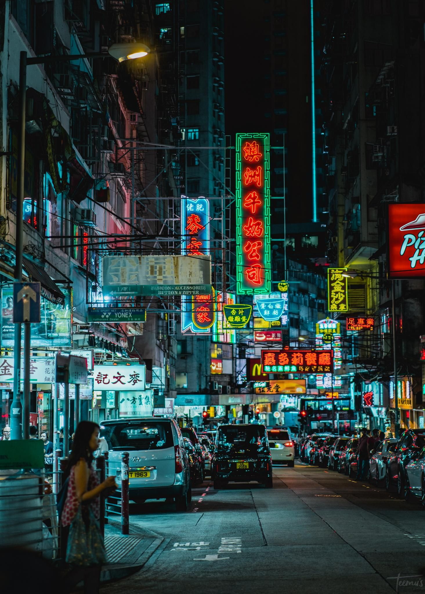

추천하는 홍콩 코스!-(3일)
- [1일차-도시적인 홍콩을 그려왔다면 이런 하루]
조금은 느리게 홍콩을 걸어보고 싶다면 포호와 완차이 그리고 코즈웨이 베이로 떠나보자.골목 구석구석을 걷다 보면
홍콩의 최신 트렌드부터 오래된 홍콩까지 다양한 매력에 빠지게 된다
포호 & 피엠큐->타이청 베이커리->완차이->코즈웨이베이->타이항
- [2일차-홍콩의 랜드마크가 궁금하다면 이런 하루]
센트럴에서 가장 낭만적인 장소로 주목받고 있는 미드레벨 에스컬레이터를 비롯해 없는게 없는 레이디스 마켓까지,
홍콩에 왔다면 꼭 가봐야할 명소들을 둘러볼 수 있는 코스다.
사이완->미드레벨 에스컬레이터->아이에프씨->빅토리아 피크->란콰이펑
- [3일차-진하고 깊게, 구룡반도에서 올드 홍콩을 만나자]
홍콩의 문화 유산과 랜드마크를 둘러보고 침사추이에서 해변 산책과 쇼핑을 즐겨 보자
화려지는 않지만 허투로 지나칠 구석이 없는 현지인들이 말하는 '진짜 홍콩'을 만날 수 있을 것이다.
하버 시티->침사추이 프로메나드->나단 로드->구룡 공원->스카이100->템플 스트리트 야시장

추천하는 음식!
BEST 5!
1.딤섬하가우(찐 새우만두), 로박고(순무 튀김) 사오마이(돼지고기와 새우를 채운 만두), 차시우바우(바비큐 돼지고기로 채운 부드러운 빵)
2.에그타르트중국 제과점에서 파는 것들이 제일 맛있음!!
3.구운 거위파삭파삭한 껍질과 핑크색 육즙이 풍부한 요리.꼬소한 전기통닭맛이 난다
4.우육면달걀 국수, 청경채, 쇠고기 육수에 조린 쇠고기 양지머리, 슬라이스, 힘줄 등을 토핑해서 만듦. 저렴하게 먹을 수 있는 음식중 하나!
5.차시우꿀, 호이신 소스, 오향가루, 청주, 진간장에 푹 재워서 만든 달콤한 풍미의 바비큐 돼지고기

내가 주는 후기!
자유여행을 갔을때, 비가 정말 많이 와서 굉장히 힘들었던 경험이 있다.
디즈니 랜드는 꼭 둘러볼것! 디즈니랜드의 터키다리 요리가 너무 맛있어서 아직도 기억이 난다. 야경이 굉장히 이쁘지만 물가는 상당히 비싸다.
힘들었던 경험도 살짝있어서 아무래도 자유여행보다는 패키지 여행으로 갈것 같다.